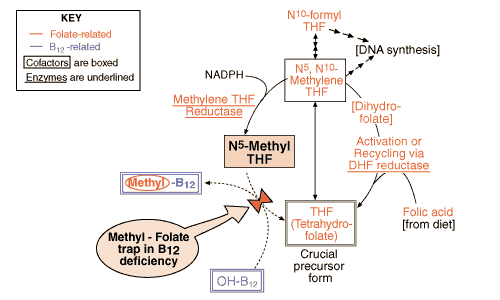

B12/Folate Problem set
Question 1: "Folate trapping" in a vitamin B12 deficiency
Tutorial to help answer the questionInsufficient Vitamin B12 often creates an apparent folate deficiency by trapping which folate intermediate?
A. folic acid B. dihydrofolate (DHF) C. tetrahydrofolate (THF) D. N5-methyl THF E. N10-formyl THF
Tutorial
Accumulation of N5-methyl tetrahydrofolate in Vitamin B12 deficiency|
 Several forms of folate are shown here, all of which must pass thru tetrahydrofolate (THF), the central intermediate. The form trapped by a B12 deficiency is N5-methyl THF, for the following two reasons: i) without B12, N5-methyl THF cannot donate its methyl group to make methyl-B12; ii) this is the only way N5-methyl THF can be converted back to THF for recycling. So, sooner or later, a significant portion of the body's folate winds up in this dead end and becomes useless. The next question explores the N5-methyl THF-requiring reaction a bit further... |


Department of Biochemistry and Molecular Biophysics
The University of Arizona
January 31, 2000
Contact the Development Team
http://www.biology.arizona.edu
All contents copyright © 2000. All rights reserved.